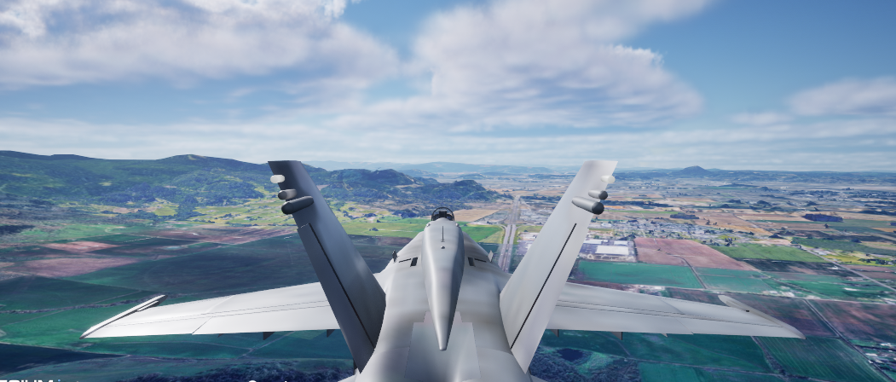
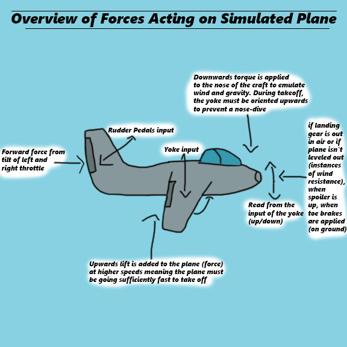
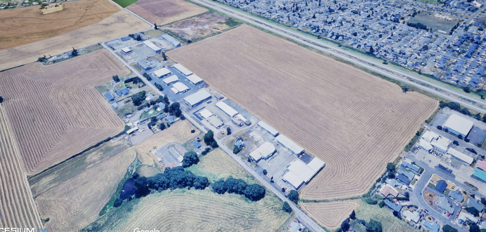

Realistic Jet Handling in an Airplane Simulation
Learn to take off, fly, and land in a virtual reconstruction of Corvallis
Key Features and Workflow
Choose your experience
As with the rest of the XR seating buck, the jet simulation is meant to be interactive. Use an XR headset to experience the plane in virtual reality or a normal computer screen.
Realistic Plane Physics
The plane's movements are powered by a combination of Unreal Engine's built-in physics and hours of research on realistic jet plane handling. Experience lift, drag, and all other forces that would be experienced when flying a real plane while you learn controls and handling.
Interactive interior
The interior of the jet plane features several elements taken from real airplanes to help you more easily learn to fly. A working GPS; a HUD telling you your speed, pitch, and yaw with a horizon marker; and cameras to help you see the outside of your plane from different angles
Purpose
Teaching Flight Basics
The purpose of this program is to teach the user the basics of how they could fly an airplane. This needs to be accomplished in two parts:
- Realistic Physics Simulation
- A detailed tutorial
- The airplane must be made to feel as similar to a real plane as possible by gathering as much reference material as possible. This was done through a combination of studying airplane cockpit tour videos, airplane flight videos, jet plane discussion forums, and a few pages describing airplane physics
- While having all of the features is nice, most users won’t be able to intuit how to fly an airplane. When testing with my teammates, everyone knew how to operate the throttle but the pedals frequently proved to be an issue and no one knew fully the correct procedure for takeoff or landing. This showed the need for a structured tutorial
- The tutorial covers takeoff, flight, and landing. Each section describes what you should be doing in text with animated gifs showing the relevant locations on the screen and animations of what you should be doing
- Each tutorial can use proximity to points to decide when they’re done. When you’re high enough in the air you’ve taken off, when you’re at cruising altitude you’re flying, and when you’re close to the final airport it’ll tell you how to land
- Unfortunately, a lot of learning a plane can be boiled down to intuition so users may not get this correct on their first try but that’s the point of a simulation
Flight Terms Cheat Sheet
| Name | Description |
|---|---|
| Jet | A jet is a type of airplane. Unlike propeller planes, jets use a gas combustion engine that produces a powerful stream of energy, enabling faster flight. |
| Yoke / Flight Stick | This is the control stick used to steer the aircraft on the pitch and roll axes using wing flaps. |
| Throttle | Controls aircraft speed. It may have one or two levers—two are often found in military aircraft to control each engine individually. |
| Rudder Pedals | Used with both feet to steer the aircraft on the ground and in the air via yaw control. Also includes toe brakes for ground slowing. |
| Spoiler | Wing flaps that deploy upward to increase drag and slow down the aircraft, usable both in-air and on the ground. |
| Landing Gear | Wheels that retract into the aircraft mid-flight to reduce drag and extend during takeoff/landing. |
| Pitch / Yaw / Roll | 3D rotation directions: Pitch tilts up/down, Yaw turns left/right, and Roll banks the plane side to side. |
Mechanics Used to Drive the Airplane
Physics Forces
Basic Input
Input was mapped internally using the Raw Input plugin for Windows which converts inputs from any controller detected by the operating system into raw data that can then be mapped to actions as generic buttons and axes.
The system works very well for steering wheels but unfortunately it’s not made to use multiple controllers for a single actor such as with the HOTAS used for our airplane simulation which was split between a Yoke, Throttle, and Pedal controller that each ran separately. In order to get input to work, I wrote down all of the button and axis maps for each controller and then chose an order for those controllers that I liked. Afterwards, I shifted each controller so the buttons did not overlap with previous controllers to get all buttons to function as inputs.
Wind Resistance & Gravity
When applying basic forces with input, these forces can compound on themselves infinitely and cause erratic behavior while driving (mainly a very rapidly spinning aircraft). How this is kept in check in real life is through wind resistance and gravity.
Gravity counteracts lift (lift being the force that pushes the plane upwards when it’s moving sufficiently fast).
Wind resistance counteracts turning and acceleration. Small factors such as tilting the plane in a direction it’s not currently moving, keeping your landing gear out, and being at the wrong altitude all affect the plane’s ability to move as efficiently through the wind. This requires the user to engage more while they’re flying and make sure that they’re sitting at cruising altitude to keep their plane running at peak efficiency.
GPS System
In order to make it easier for the user to navigate from one airport to another, it seemed necessary to integrate a gps system into the jet plane. The Goal of the GPS was to display on one of the two integrated monitors in the cockpit. Once dot would represent the user’s aircraft and a second dot would represent the location they’re meant to fly to. Between these points is a straight line the player can follow (since they’re to fly to their destination). The GPS will then terminate both points and notify the user when they’ve arrived at their destination.
This system is ideal both because it’s a real feature used by airplane pilots including on jet planes, and because most people already have prior experience with a GPS which helps make more parts of our system intuitive for the user to work with.
Map Streaming and Using Multiple Maps at Once
Realistic maps are large and expensive to create both in terms of money and resources. To create a simulator that works in virtual reality, we needed a system to overcome these obstacles and we found that system with Cesium.
Cesium is a tool that streams data from both Bing Maps and Google Maps. It’s possible to obtain a GPS map, flat aerial photos of the ground, and low fidelity 3d models. The Unreal Jet project ended up using the 3d models to represent the ground since they give depth and from far away they still have enough detail to appear realistic to the user
Tutorial System
The goal of the tutorial system is to provide a lightweight but still comprehensive set of instructions to teach the user how to fly the plane during different points in their trip from Albany to Corvallis. They'll be taught how to drive on the tarmac, fly, and land their airplane.
The tutorial will be a widget displayed in 3d space. It's attached to the interior of the plane with buttons that are interactable with the buttons on the jet-plane's yoke. Each tutorial activates just before the user needs to learn the relevant information: Driving on startup, flying just as the user begins to take off (roughly 200 meters in the air), and landing right as the user arrives at their destination (the Corvallis Airport). Like this web page, the tutorials all have a cheat sheet in the form of a button that opens a new window with definitions built onto it.